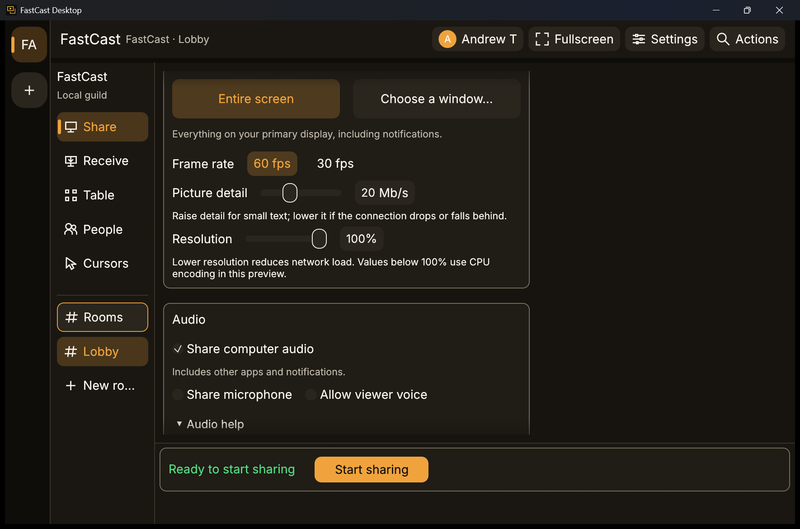

{kind=link}
Your hardware
The Windows PC captures and encodes. A Windows or Android viewer decodes.

Share a Windows screen to another PC or an Android phone. No account. No store. No FastCast relay.
Windows x64 sender · Windows or Android viewer
LAN or a private network you can already reach · Files and warnings

COSTFree. No subscription.
ROUTEPeer to peer, if the path exists
BUILDUnsigned Windows · debug Android
Because the usual screen share is bolted onto a chat company. FastCast is a native utility. Your machines do the encode and decode. We do not run a media relay. There is no FastCast account.
Why FastCast →You do. That is why there is no bill. GitHub only hosts this site and the files.
The Windows PC captures and encodes. A Windows or Android viewer decodes.
Same LAN, or another route you already have. Guest Wi-Fi and CGNAT will fight you. We do not sell a tunnel.
A live share does not go through FastCast. If your VPN relays packets, that is your VPN, not us.
Matching versions. The viewer makes the invite. Windows starts the share. Keep that invite off the public internet.